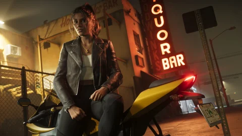

Empresas, GTA VI
As empresas de Leonida
Oficinas, lojas, salões e locais de música: descubra os endereços que dão vida a Leonida e os serviços que a Rockstar realmente descreveu.
Cada ficha liga suas imagens aos personagens ou lugares envolvidos. Os serviços reservados a uma edição são detalhados nas novas seções Estilo e Personalização; ter ou administrar essas empresas não está confirmado. Entender os status.
As 8 fichas


Oficina off-road
Uma oficina com nome, ainda sem localização.


Gravadora
O selo que procura seu primeiro hit.

Fontes oficiais
O que a Rockstar mostrou
Letreiros nos trailers, nomes nas fichas e depois textos das edições que descrevem cinco comércios.
- Visto na mídia
Trailer 1
Uma loja Uncle Jack’s Liquor assaltada por Jason e Lucia (por volta de 1:16) e uma faixa de avião para o clube NINE 1 NINE.

Imagem oficial da Rockstar Games - Oficial
Fichas e Trailer 2
As fichas de Boobie e Dre’Quan citam o Jack of Hearts e a Only Raw Records, o selo de Real Dimez; a de Brian, o estaleiro dele. O Trailer 2 mostra o bar The Rusty Anchor (1:19), o NINE 1 NINE, as dançarinas do Jack of Hearts (2:07) e um anúncio de “Phil’s Ammu-Nation” (2:10).

Imagem oficial da Rockstar Games - Oficial
Edições
Cinco comércios recebem um texto oficial: Rideout Customs em Vice City (interiores, rodas, estilo “donk”), One-Eyed Willie’s em Lake Leonida (off-road, pinturas feitas à mão), Stock 305 em Stockyard (streetwear), Sara’s Unisex Salon (cortes de cabelo, barba, maquiagem, unhas), Electric Fang Tattoo em Stockyard (mais de 50 tatuagens do coletivo FAILE). As duas oficinas e a Stock 305 “só abrem com a edição Ultimate”. Uma missão ataca a loja dos PTT Youngin$ em Southside.

Imagem oficial da Rockstar Games - Visto na mídia
Extended Look, Famitsu e depois
Assaltos a postos de gasolina, Lucia escondendo a arma nas costas antes de entrar em uma loja (17:57), estande de tiro, academia, o interior do Jack of Hearts, o bar Effluvia. Rob Nelson acrescenta na Famitsu: inúmeras lojas e salões, Ammu-Nation com armário, um Pay ’n’ Spray que indica quanto vale na revenda um carro roubado, receptadores, joalherias bem vigiadas. No começo de setembro: abastecer leva uns dez segundos.

Imagem oficial da Rockstar Games
As oito fichas acima descrevem cada estabelecimento. Esta página diz o que está escrito, o que só foi visto e o que falta.
Observações dos jogadores
O que a comunidade identificou
Quase todo estabelecimento tem um modelo em Miami ou nas Keys, segundo os jogadores.
Jack of HeartsO King of Diamonds de Miami; a fachada lembra uma antiga academia de boxe de Edgewater. fonte
NINE 1 NINEO clube E11EVEN, que respondeu com um trailer falso em dezembro de 2023. fonte
EffluviaJuvia, bar de cobertura em Miami Beach, fechado em 2023. fonte
Uncle Jack’s LiquorAs lojas Big Daddy’s da Flanigan’s, que gostaram da referência. fonte
Stock 305 e Electric Fang TattooDois prédios de Wynwood, em Miami. fonte
Sara’s Unisex SalonUm prédio vazio de Homestead, na Flórida. fonte
The Rusty Anchor e o estaleiro de BrianO Caribbean Club e o Marina Club de Blackwater Sound, em Key Largo. fonte
Only Raw Records e One-Eyed Willie’sMaybach Music Group, selo de Miami; referência ao pirata de Os Goonies (1985). fonte
Quando um estabelecimento real responde à Rockstar, como a E11EVEN ou a Flanigan’s, continua sendo uma identificação.
Perguntas em aberto
O que ainda falta confirmar
O que ninguém publicou sobre o dinheiro dos comércios.
Comprar ou administrar uma empresa?
Nenhum anúncio. Os comércios conhecidos pertencem a personagens; só a compra de garagens é confirmada pela Rockstar.
O preço dos serviços
Nenhum número para um corte de cabelo, uma tatuagem, uma modificação ou para encher o tanque.
Os comércios das edições são para todo mundo?
Não: Rideout Customs, One-Eyed Willie’s e Stock 305 ficam fechados na edição Standard; o upgrade de edição é vendido à parte.
Quantos comércios dá para assaltar
“Quase todas as lojas”, segundo as prévias; nenhum número.
Um receptador por tipo de butim
Carros, drogas, joias, segundo as prévias. Sem página da Rockstar.
Ferramentas do site
O que muda para você
As fichas, o mapa e a calculadora trabalham juntos.
CalculadoraValeria a pena?Escreva quanto custaria e quanto renderia: você vê quando isso se pagaria.AbrirMapaOs comércios descobertosRideout Customs, Sara’s, Stock 305, Electric Fang, o Jack of Hearts, PTT Youngin$, o estaleiro de Brian.AbrirComprasTudo o que dá para comprarAs categorias, seus status, o que você pode marcar ou simular.AbrirPersonalizaçãoOficinas e tatuagensO que as três oficinas anunciam, com a fonte.Abrir
Perguntas
Perguntas frequentes
As perguntas que as pessoas digitam num buscador, com respostas curtas e datadas.
Dá para comprar empresas em GTA VI?
Não, nada foi anunciado. Os comércios apresentados pertencem a personagens (Boobie, Dre’Quan, Brian); a Rockstar só confirmou a compra de garagens.
As lojas da edição Ultimate são exclusivas?
Sim para Rideout Customs, One-Eyed Willie’s e Stock 305: na edição Standard, eles “não estão abertos”; o upgrade de edição é vendido à parte. A Sara’s oferece cortes de cabelo “de assinatura”, a Electric Fang, tatuagens “exclusivas”.
Dá para assaltar lojas?
Sim. O Extended Look (27 de agosto de 2026) mostra assaltos a postos de gasolina e a lojas, sozinho ou com Lucia. Segundo Rob Nelson (Famitsu), joalherias e bancos pequenos são mais bem vigiados.
O que é o Jack of Hearts?
O clube de strip-tease de Boobie Ike, citado na ficha oficial dele: o dinheiro do clube paga o estúdio Only Raw Records. Visto no Trailer 2 e por dentro no Extended Look; colocado no nosso mapa.
Onde abastecer e consertar o carro?
Nos postos de gasolina: segundo Rob Nelson (começo de setembro de 2026), abastecer leva uns dez segundos e o posto também faz reparos.
24 fontes consultadas
Fontes e status
Cada afirmação desta página traz um status e vem de uma página consultada na data indicada. As páginas da Rockstar são citadas com a data da última consulta direta; os textos delas foram relidos em 27 de setembro de 2026 nas fontes que os reproduzem.
Oficial
Página ou vídeo publicado pela Rockstar (site de GTA VI, Newswire, trailers, Extended Look), ou declarações de um responsável da Rockstar relatadas por um veículo de imprensa identificado, com a data.
Visto na mídia
O que uma imagem ou sequência oficial mostra, sem um texto da Rockstar que diga isso: um plano de trailer, uma captura, um momento do Extended Look, com o minuto exato quando é conhecido.
Identificação da comunidade
Comparação feita por jogadores, por uma wiki ou por um site de fãs (lugar real, ator, condado). Citada como tal, nunca apresentada como confirmada.
A confirmar
Pergunta sem resposta publicada: preço, compra, acesso, papel na história. Anotamos a pergunta para não adivinhar a resposta.
Páginas consultadas
- OficialSite oficial de Grand Theft Auto VI (páginas “Only in Leonida”, edições, pré-vendas)
Seis regiões e oito personagens apresentados em 6 de maio de 2025; textos das edições de 24 de junho de 2026. Relido em 27/09/2026 nas páginas que o citam (rockstargames.com inacessível do nosso estúdio naquele dia).
- OficialRockstar Games: vídeos oficiais de GTA VI (Trailer 1, Trailer 2, An Extended Look)
Trailer 1 de 4 de dezembro de 2023, Trailer 2 de 6 de maio de 2025, Extended Look de 27 de agosto de 2026: os quadros do site vêm deles.
- OficialRockstar Games: capturas oficiais de GTA VI
Capturas das regiões e dos personagens (maio de 2025) e das edições (junho de 2026); os estabelecimentos nomeados nos títulos das capturas.
- OficialRockstar Newswire: Pre-Order Grand Theft Auto VI on June 25
Edições, Pacote Vintage Vice City, lançamento em 19 de novembro de 2026.
- OficialGaming Nexus: GTA VI reveals pricing, editions, and emphasis on immersion
Texto oficial dos comércios da edição Ultimate: Rideout Customs, One-Eyed Willie’s em Lake Leonida, Stock 305 e Electric Fang em Stockyard, Sara’s Unisex Salon, PTT Youngin$ em Southside, Ammu-Nation.
- OficialGamingBible: GTA 6 locks exclusive content behind the Ultimate Edition
Na edição Standard, essas lojas “não estão abertas”.
- OficialTheSixthAxis: Ultimate Edition and Vintage Vice City Pack revealed
Texto oficial do Pacote Vintage: o Stanier ’55 e uma garagem “a dois passos de Ocean Beach”; Ganado Retro Build; pré-vendas em 25 de junho.
- OficialGamesRadar+: new GTA 6 gameplay details revealed alongside 63 screenshots
“Jason’s Safehouse” é o nome oficial no jogo; garagens pessoais por todo Leonida com armário de armas; receptador local e Stash Box.
- Identificação da comunidadeGTA Wiki: Jack of Hearts, NINE1NINE, Effluvia, Uncle Jack’s Liquor, The Rusty Anchor, Brian’s Boat Works & Marina, Stock 305, Electric Fang Tattoo, Sara’s Unisex Salon, Only Raw Records, Rideout Customs, One-Eyed Willie’s (uma página por estabelecimento)
Aparições com minutagem nos trailers e no Extended Look; endereços reais propostos em Miami, Wynwood, Homestead e Key Largo.
- Visto na mídiaGTA Wiki: official screenshots of Grand Theft Auto VI
Títulos das capturas oficiais: seis estabelecimentos nomeados em junho de 2026, nenhum em maio de 2025.
- Visto na mídiaGTA Wiki: planos dos trailers, com minutagem
Plano a plano do Trailer 1 e do Trailer 2, com a minutagem usada nesta página.
- Visto na mídiaGTA Wiki: Grand Theft Auto VI, An Extended Look
Transmissão de 27 de agosto de 2026 (Netflix e depois YouTube), 26 min 48 s, quatro missões: Venture Apartments, Effluvia, perseguição com Raul, Megamundo.
- Visto na mídiaGamesRadar+: everything revealed from the GTA 6 extended look
Assaltos a postos de gasolina com bandana, Lucia entrando em uma loja com a arma nas costas, academia.
- Visto na mídiaEngadget: 20+ things you may have missed in the GTA 6 extended look
Effluvia (10:50), estande de tiro (18:31), troca de Jason para Lucia (18:41), arma escondida nas costas antes de uma loja (17:57).
- Visto na mídiaComicBook: o anúncio “Phil’s Ammu-Nation” do Trailer 2
Anúncio de TV da Phil’s Ammu-Nation por volta de 2:10; a ligação com Phil Cassidy é uma hipótese.
- OficialFamitsu: entrevista com Rob Nelson (Rockstar North) após a demonstração
Esconderijos que mudam com os capítulos, três vagas de veículo no início, garagens para comprar, armário na Ammu-Nation, Pay ’n’ Spray e receptadores, assaltos, salões e lojas, corte de cabelo em casa.
- OficialGTAVice.net: tradução em inglês da entrevista da Famitsu
Mesma entrevista, citada em inglês; as falas de Rob Nelson usadas aqui vêm dela.
- OficialGamesRadar+: Rockstar boss on GTA 6’s refueling system
Rob Nelson: abastecer leva uns dez segundos, o posto também faz reparos (falas relatadas a partir de uma apresentação na Rockstar North).
- OficialGamingBible: 7 new GTA 6 gameplay details
Rob Nelson: corte de cabelo limitado em casa, salões para ter mais opções, drogas roubadas vão para o receptador.
- A confirmarVice: GTA 6 just revealed a massive number of new gameplay details
Prévias da imprensa sem citação da Rockstar: esconderijos que não podem ser comprados, garagens que podem, quase todas as lojas podem ser assaltadas, receptadores especializados, plano da academia.
- Identificação da comunidadeDexerto: fans convinced they’ve found the trailer’s strip club in real life
Jack of Hearts comparado ao King of Diamonds de Miami.
- Identificação da comunidadeDexerto: Miami nightclub responds to GTA 6’s imitation with a parody trailer
A E11EVEN reconhece o NINE 1 NINE e responde com um trailer falso.
- Identificação da comunidadeMiami New Times: a Florida Flanigan’s made the GTA 6 map
Uncle Jack’s Liquor comparado às lojas Big Daddy’s da Flanigan’s.
- Identificação da comunidadeGTA Intel: GTA 6 businesses and properties, what we expect
Lembra as oito empresas compráveis de GTA Vice City (2002) e observa que os comércios conhecidos de GTA VI pertencem a personagens.
O que não fazemos. Nenhum dado vindo dos vazamentos de 2022 ou de 2026, nenhum preço inventado, nenhuma comparação apresentada como confirmada. Os status são explicados no Tutorial.
Continue explorando


A calculadora
Uma empresa como a de Boobie valeria a pena?
O que custa, o que rende: a calculadora diz quando isso se pagaria e se compensa mais do que jogar sem isso.
E depois?
O resto será escrito em 19 de novembro de 2026.
Cada ficha será completada com o jogo: o que se encontra lá, o que se faz lá, quanto rende. Nada inventado até lá.